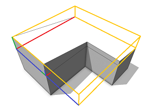
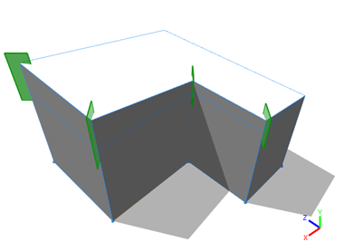

roofShed operation
valueType selector { byAngle | byHeight } Type of roof generation.
value float Angle or height of the roof-planes as specified by valueType.
angle float Angle of the roof plane (generation byAngle).
index float Edge index (thus integral value) to specify the orientation of the shed roof.
The roofShed operation builds a shed roof perpendicular to each face of the current shape's geometry. At edge index (default value 0), a plane is generated with a given angle or height wrt. the polygon plane.
If index is set, the roof plane is oriented to the specified edge.
Scope
The scope orientation is set in the following way:
- x-axis direction is kept as much as possible (old x-axis is projected to the plane of the first face)
- y-axis along the face normal of the first face
- z-axis normal to the two above
The scope's sizes are adjusted to tighly fit the extruded geometry.
Component tags

The operation automatically applies semantic component tags to the resulting face components:
| "roof.bottom" | Blue: original face. |
| "roof.side.outer" | Yellow: side faces. |
| "roof.side.inner" | Red: side faces from holes. |
| "roof.top" | Green: roof faces. |
For more information on working with component tags, refer to:
Related
Examples
Simple Shed Roof
A basic shed roof is generated on top of an extruded L-lot.

Lot --> extrude(10) Mass
Mass --> comp(f) { top: Top | all: X }
Top --> roofShed(10, 3) Roof
A shed roof with roof slope 10 degrees is built on top of an extruded L-lot. The edge index is set to 3. Note the roof orientation and the setting of the pivot and scope.

Roof --> comp(f) { all : X }
After a component split, roof side faces contain trim planes to cut bricks on insertion.
There is exactly one side roof face perTop shape edge.